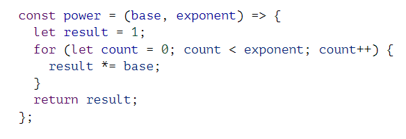

WDD 330
Reports
Week 01
Master Mobile UX
Develop up!
2-3 devices per household (outside a computer)
"marshmallow into a piggy bank"
Week 02
Basics of functions, statements, expressions. basic blocks of any standard code. expressions end in semi colons (;). basically similar to the consruction of any writing containing words, sentences pharagraphs, ect.. All these going into the overall 'story'
loops - a way of separating an operation especially if it needs to be perfomed more than once.
how you format a document is important for seeing where the flow of that document is and the components of a specific operation (usefull for seeing what are implements of a loop and what the loop is).
Functions - scopes and bidings - see below code
if(true){
let y = 20;
var z = 30;
}
Y and Z are only visible (and accessable) within the if expression. AKA Y and Z are only availible within
that 'scope.'
Arrow Fucntions =>
example:

this is another notation for functions with only one upside (says they will go over it later). Probably
won't be using too many of these (at least as far as i can think)
recursion - AKA if/else statements
Objects and Arrays - lists of data. each form has its advantages.
Arrays are strings of data.
Week 03
Again Not many new things from our readings,
DOM - Document Object model. javascript - "I have ultimate POWER!"
Events - the things that happen to HTML aka the react on HTML
Objects - Things to be acted upon or used.
Week 04
Forms
default text in forms - use input.addEventListner to allow default text to apear but not start as part of the input. (this is another way to do a placeholder of html forms)
OOP
Constructiors - functions that return instances of the object
using a prototype you can add new properties to a constructor (inheritance, polymorphisim)
example
i make an object (point named p) this object has a function (show()) that shows the point. Do i really need all points to have their OWN show()? instead i can use point.prototype.show = function() this allows this to be bart of the objecst but not have their own doing so makes show() a part of the prototype for point. if you need to you can override this in that object.
public vs private - editable outside of scope or not
mixins - ways to add parts of one object to another object without inheritance.
Chaining - object.functionName().anotherfunctionName()
HTML 5 API - Modules
aka fucntions that can be used on other pages or in other files. keeps code organized in separate files.